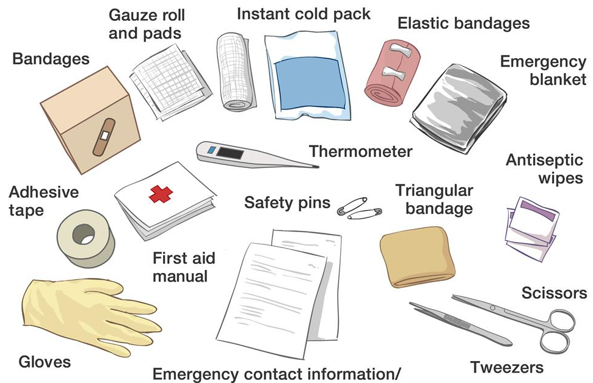

First Aid for kids
First aid is the first assistance given to someone who is injured and needs help. The care provided is intended to prevent conditions from becoming worse; promote recovery and preserve life.First Aid knowledge is invaluable for both you as the individual and for your community. It enables you to assist persons who become injured in the event of an accident or emergency situation until help arrives.
Teaching about First Aid to children
Teaching first aid knowledge to kindergarten students can help them develop important life skills and prepare them to respond to emergency situations. Here are some basic first aid topics that can be taught to kindergarten students:
Calling For Help
When you are in a situation which needs first aid, you need to communicate clearly by talking to them and explaining what is happening which will help them to feel reassured.Sometimes, you will need a lot more help than you are able to give. The best thing you can do is phone for emergency help. Phone your national emergency helpline(s).
Discover your First Aid Kit together
Go through the first aid kit together, and have some extra bits of gauze, tape, and cotton balls on hand so your child can practice with real tools: smaller kids get a special thrill out of these materials. Make sure your family kit is well organized so a child can find recognizable tools quickly, and have illustrated instruction pamphlets on hand.
Checking ABC (Airway,Breathing,Circulation)
ABC refers to the priorities in a first aid situation. While dealing with unconscious people, we have to keep their airways open. For those who are breathing, put them in recovery positions. Air circulation is also a key matter for the casualties.
CPR
The person giving CPR is called a rescuer who follows three main steps.First,The rescuer presses on the person's chest many times in a row to move blood out of the heart that has stopped beating.Then, check the airway.If the person is not breathing, TWO rescue breaths are given.
Burns and scalds
Use a piece of wet clothing to minimize the damage on the skin. The victim should be in a comfortable position. Keep assuring the victim until the professional help arrives.
First Aid for Sprains, Strains and Fractures:
Sprains, strains and fractures can happen easily after accidents or falls, or during sport or other physical activities.When an injury happens, there can be bruising and swelling in the injured area
R-I-C-E Method
For Sprain or Fracture Rice method works well.RICE stands for: Rest and protect the injured or sore area. Ice or a cold pack used as soon as possible. Compression, or wrapping the injured or sore area with an elastic bandage. Elevation (propping up) the injured or sore area.